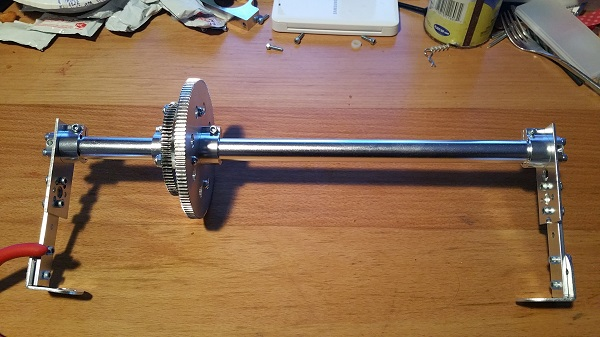
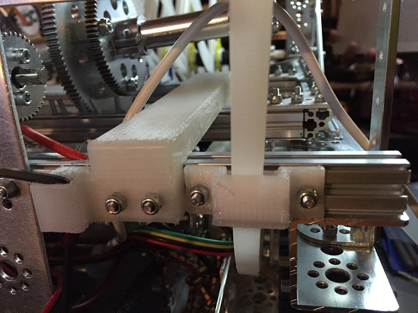

After further testing of the churro climbers, we noticed that the axle the gear is rotating on had been bent severely due to the strain on it of the arms pulling. If we left the axle as it was, it might wreck something else later and become unusable, so we tried to figure out a way of creating something that served the same function as the axle but wouldn't bend as easily. We decided on using long, slender aluminum tubes that Max put together with the gear that drives the arms forward and backward. They will most likely retain their integrity, but one flaw with them is that if they do fail, they will fail much more catastrophically than the axle would have, and would be much more difficult to replace. We're riding on our confidence that they'll hold throughout the strain.  We also 3D-printed and installed a couple of things (Max-designed): first, small guides that the arms can move through so that they push forward and pull back the way we want them to; and second, longer pieces that hold the beater bar back while it's waiting to be released.  As a small quality-of-life improvement, we have added a couple of pieces of cardboard to the sides of the beater bar today to block game elements from getting stuck in the empty spaces that are there.
After further testing, we found that the axle actually did crack at a weak point it had. It's been fixed and hopefully the same thing doesn't happen again since we fixed its weak point. With our first competition approaching, this new mechanism is a very good step towards the completion of our robot, but we still have a lot to do. We might not have even needed to replace what we had had we given it a few more supports, but this is overall a better design anyway and was worth the time. Little improvements are also nice whenever they can be made. Our design of the supporting churro axle caused it to not hold up to the tension the churro catchers, which caused it to gradually bend inwards. This new design rids us of that problem, as the tension is now spread throughout the axle rather than at one point.